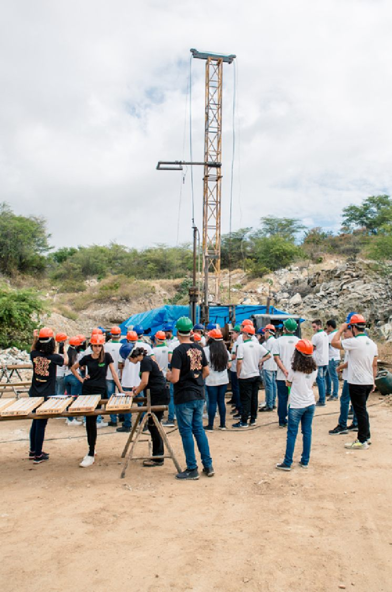
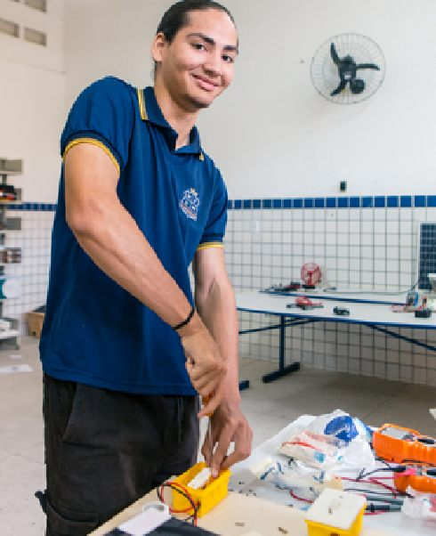

Acompanhamento da EPT
Todo ano, as equipes da SUEP e das DIRECs visitam as unidades com EPT. Esta página reúne os dados públicos desse acompanhamento e mostra como eles viram decisões.

O ciclo de monitoramento
O monitoramento da rede estadual de EPT segue cinco etapas. O ciclo se fecha quando os dados de um ano orientam o planejamento do ano seguinte.
- ColetarVisitas técnicas e instrumentos de registro em cada unidade.
- SistematizarOs registros são organizados em painéis de dados.
- AnalisarOs resultados são lidos por dimensão, DIREC e unidade.
- PlanejarAs evidências definem prioridades e formações.
- AgirAs ações voltam para as escolas, e o ciclo recomeça.
O que as visitas de 2026 mostraram
Outros destaques das visitas
- 99%usam dados para orientar o planejamento 84% plenamente e 15% em parte
- 93%desenvolvem iniciação científica 66% plenamente e 27% em parte
- 89%fazem busca ativa de estudantes que se afastam da escola
- 88%integram a formação geral e a formação técnica 37% plenamente e 51% em parte
- 73%têm parcerias ativas com empresas e instituições 44% plenamente e 29% em parte
- Mantiveram ou ampliaram a oferta de EPT 90%57% mantiveram e 33% ampliaram em relação a 2025
- Quadro de professores técnicos completo 83%118 das 142 unidades
- Fazem visitas técnicas ao setor produtivo 52%outras 36% estão planejando
- Perceberam aumento de matrículas 39%46% mantiveram o número de estudantes
- Têm laboratório específico para os cursos 26%25% têm parcialmente; é o principal ponto de atenção
Percentuais sobre as 142 unidades visitadas (iniciação científica: 139 respostas; parcerias: 140). Fonte: pesquisa de visitas técnicas da SUEP 2026.
O que as equipes observam
As visitas técnicas são, ao mesmo tempo, acompanhamento pedagógico e formação em serviço. Em cada unidade, SUEP e DIREC conversam com a gestão e os professores sobre estes temas:
- Práticas pedagógicas
- Gestão escolar
- Acesso e permanência
- Investigação científica
- Mundo do trabalho
- Avaliação



O estágio em números (2025)
O estágio supervisionado não obrigatório leva a prática profissional da capital ao interior e valoriza as vocações produtivas de cada região.